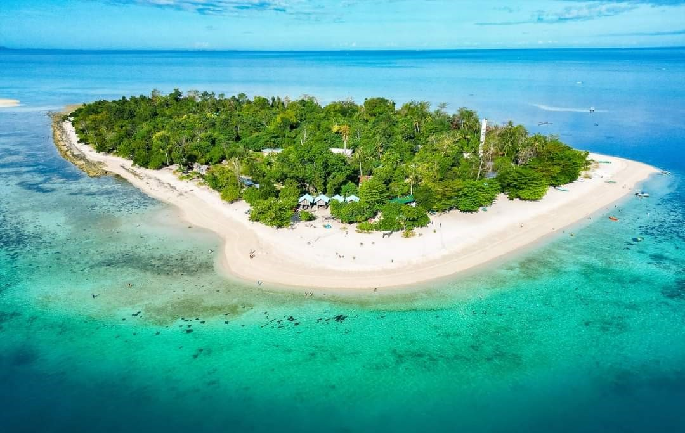

With its powdery white sandbars and crystal-clear waters, Kalanggaman Island is one of the most stunning island destinations in Leyte. Known for its peaceful atmosphere and untouched beauty, the island offers visitors a perfect escape for swimming, sunbathing, and enjoying the serene coastal environment.

Located off the coast of Palompon, Kalanggaman Island is famous for its long, stretching sandbars that extend on both ends of the island. These sandbars, combined with the island’s clear blue waters, create a breathtaking landscape that attracts both local and international tourists. The calm and shallow waters surrounding the island make it ideal for swimming and wading, while the open shoreline provides plenty of space for relaxation.
The island is carefully maintained to preserve its natural beauty, with limited structures and strict visitor guidelines. This ensures a clean and peaceful environment where guests can fully enjoy the scenery. Popular activities include snorkeling, beach picnics, and simply walking along the sandbars while taking in the panoramic ocean views. Its unspoiled charm and tranquil setting make it one of the top coastal destinations in the region.

The surrounding waters are clear, calm, and ideal for swimming and snorkeling.
Kalanggaman is considered one of the most beautiful islands in Leyte.
Kalanggaman Island is known for its long, white sandbars on both ends of the island.

